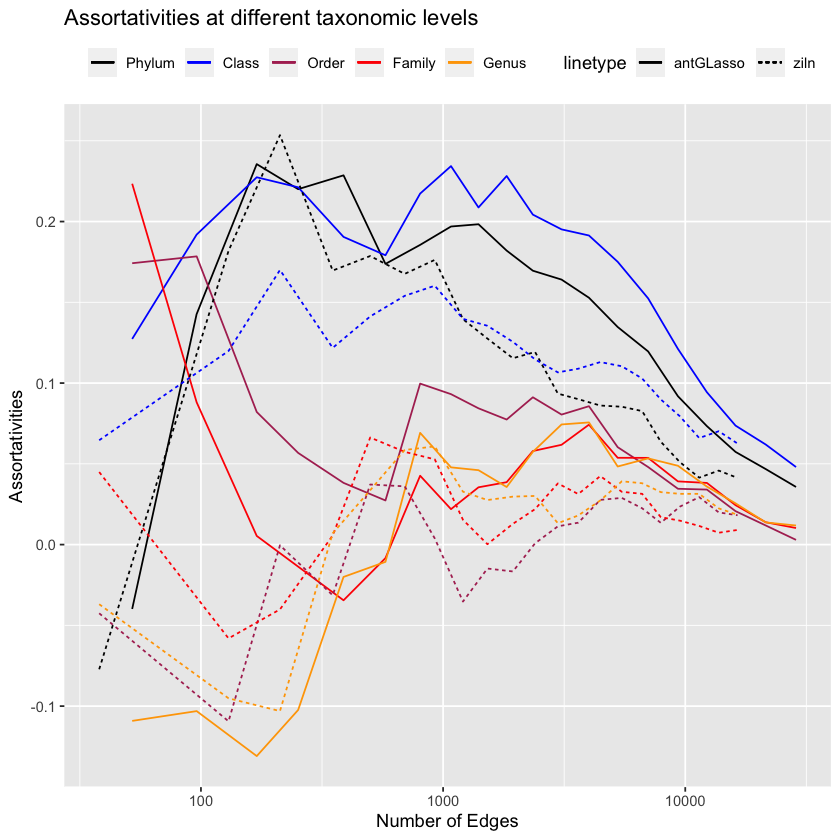

library(igraph)
library(ggplot2)Fixed antGLasso
Work
Omics
Useful
It’s taken a month 😅
Recap
In previous blog posts we looked at estimating dependencies between microbes in a microbiome (Dataset and Baseline Methodology: Vincent Prost 2021). We saw that my custom method, antGLasso, did not perform as well as the method we compared against - in fact, it seemed as though antGLasso was saying nothing of value!
After much investigation, this was due to an error in my implementation, which I have now fixed. Let’s see how it compares, using their assortativity metric!
Load in the Data
Code here
antGLasso
antGLasso.mat <- as.matrix(
read.csv(
"./localdata/antGlasso-output-iter-raws--fast-test.csv",
header=FALSE,
col.names=paste0("C", 1:565)
)
)# These bounds were chosen by eye.
#upper.bound <- 0.15
#lower.bound <- 0.05
upper.bound <- 0.6
lower.bound <- 0.07
sum(abs(antGLasso.mat) > upper.bound) / 2 - 282.5
sum(abs(antGLasso.mat) > lower.bound) / 2 - 282.5
antGLasso.lambdas <- exp(0:19 * (log(upper.bound) - log(lower.bound)) / 19 + log(lower.bound))
26
14335
# Construct the regularized antGLasso matrices
threshold.matrix <- function(mat., threshold) {
mat <- matrix(0, dim(mat.)[[1]], dim(mat.)[[2]])
mat[abs(mat.) < threshold] = 0
mat[abs(mat.) > threshold] = 1
diag(mat) <- 0
return(mat)
}
num.elements <- function(mat) {
sum(mat != 0)
}
antGLasso.path <- lapply(
antGLasso.lambdas,
function(thresh) threshold.matrix(antGLasso.mat, thresh)
)ZiLN
# Load the data
load("localdata/ll_deep.rda")
# Rename the taxmat columns to something more informative
colnames(taxmat) <- c(
"Domain",
"Phylum",
"Class",
"Order",
"Family",
"Genus"
)
# Load the libraries
source("./localdata/Zi-LN-master/inference.R")
source("./localdata/Zi-LN-master/utils/utils.R")
library("huge")
library("igraph")
# Get a boolean 1135x3957 matrix of whether the species
# was found in the person or not
nonzeros <- counts > 0
# Get the number of distinct people that possessed each species
num.nonzeros <- apply(nonzeros, 2, sum)
# Get the total amount of people
total.cells <- dim(counts)[1]
# Only keep the species who appear in more than 20% of the people
keep.indices <- (num.nonzeros / total.cells) > 0.2
counts_el <- as.matrix(counts[, keep.indices])
write.csv(counts_el, "./localdata/filtered-raw-counts-ziln.csv")
taxmat_el <- taxmat[keep.indices,]
# Get the zs
options(warn = -1) # turn warnings off because otherwise it's gonna scream...
zs <- infer_Z(counts_el)# Get the matrix for ZiLN methodology
ziln.lambdas <- 10^seq(-0.1, -1.1, by=-0.05)
ziln.path <- huge(zs, lambda=ziln.lambdas)$pathConducting Meinshausen & Buhlmann graph estimation (mb)....donenum.elements(ziln.path[[1]])
num.elements(ziln.path[[20]])
38
13752
Plotting Utility Functions
Code here
get.assortativity.at.level <- function(adjacency.graph, taxmat, taxa.level) {
groups <- as.integer(as.factor(taxmat[, taxa.level]))
return(assortativity(adjacency.graph, groups))
}
get.assortativity.at.levels <- function(adjacency.graph, taxmat) {
curried.assortativity <- function(taxa.level) get.assortativity.at.level(
adjacency.graph,
taxmat,
taxa.level
)
return(
lapply(
colnames(taxmat),
curried.assortativity
)[2:length(colnames(taxmat))]
)
}plot.all.assortativities <- function(path, taxmat, lambdas) {
graphs <- lapply(
lapply(path, graph.adjacency),
as.undirected
)
assortativities <- lapply(
graphs,
function(graph) get.assortativity.at.levels(graph, taxmat)
)
# Remove first element as full of NaNs
assortativities <- assortativities[2:length(assortativities)]
lambdas.short <- lambdas[2:length(lambdas)]
assortativities.1 <- as.numeric(lapply(assortativities, function(l) l[[1]]))
assortativities.2 <- as.numeric(lapply(assortativities, function(l) l[[2]]))
assortativities.3 <- as.numeric(lapply(assortativities, function(l) l[[3]]))
assortativities.4 <- as.numeric(lapply(assortativities, function(l) l[[4]]))
assortativities.5 <- as.numeric(lapply(assortativities, function(l) l[[5]]))
ggplot(
data.frame(assortativities.1),
aes(x=lambdas.short)
) +
geom_line(aes(y = assortativities.1, color = "Phylum")) +
geom_line(aes(y = assortativities.2, color = "Class")) +
geom_line(aes(y = assortativities.3, color = "Order")) +
geom_line(aes(y = assortativities.4, color = "Family")) +
geom_line(aes(y = assortativities.5, color = "Genus")) +
scale_colour_manual("",
breaks = c("Phylum", "Class", "Order", "Family", "Genus"),
values = c("black", "blue", "maroon", "red", "orange")
) +
theme(legend.position = "top") +
labs(x = "Regularization parameter lambda", y = "Assortativities") +
ggtitle("Assortativities at different taxonomic levels")
}plot.compared.assortativities <- function(paths, taxmat, line.names) {
final.plot <- ggplot()
min.edges <- 10000000
max.edges <- 0
for (i in 1:length(paths)) {
path <- paths[[i]]
graphs <- lapply(
lapply(path, graph.adjacency),
as.undirected
)
assortativities <- lapply(
graphs,
function(graph) get.assortativity.at.levels(graph, taxmat)
)
# Remove first element as full of NaNs
#assortativities <- assortativities[2:length(assortativities)]
#lambdas.short <- lambdas[2:length(lambdas)]
x.sparsity <- sapply(path, num.elements)
min.edges <- min(min.edges, min(x.sparsity))
max.edges <- max(max.edges, max(x.sparsity))
assortativities.1 <- as.numeric(lapply(assortativities, function(l) l[[1]]))
assortativities.2 <- as.numeric(lapply(assortativities, function(l) l[[2]]))
assortativities.3 <- as.numeric(lapply(assortativities, function(l) l[[3]]))
assortativities.4 <- as.numeric(lapply(assortativities, function(l) l[[4]]))
assortativities.5 <- as.numeric(lapply(assortativities, function(l) l[[5]]))
final.plot <- final.plot +
geom_line(
aes_string(
x=x.sparsity,
y=assortativities.1,
color=shQuote("Phylum"),
linetype=line.names[[i]]
)
) +
geom_line(
aes_string(
x=x.sparsity,
y=assortativities.2,
color=shQuote("Class"),
linetype=line.names[[i]]
)
) +
geom_line(
aes_string(
x=x.sparsity,
y=assortativities.3,
color=shQuote("Order"),
linetype=line.names[[i]]
)
) +
geom_line(
aes_string(
x=x.sparsity,
y=assortativities.4,
color=shQuote("Family"),
linetype=line.names[[i]]
)
) +
geom_line(
aes_string(
x=x.sparsity,
y=assortativities.5,
color=shQuote("Genus"),
linetype=line.names[[i]]
)
)
}
final.plot +
scale_x_log10() +
scale_colour_manual("",
breaks = c("Phylum", "Class", "Order", "Family", "Genus"),
values = c("black", "blue", "maroon", "red", "orange")
) +
theme(legend.position = "top") +
labs(x = "Number of Edges", y = "Assortativities") +
ggtitle("Assortativities at different taxonomic levels")# +
#xlim(min.edges, max.edges)
}Make Plots
plot.compared.assortativities(
list(antGLasso.path, ziln.path),
taxmat_el,
list(shQuote("antGLasso"), shQuote("ziln"))
)
This looks wonderful! antGLasso and ziln perform similarly.
(Don’t try to interpret the low-edges happenings on the graph, it’s very noisy. Vincent Prost (2021) considered the number of edges to be ~1200, which conveniently is about the area where our algorithm clearly outperforms it on the low-level taxonomies!1)
References
Vincent Prost, Thomas Brüls, Stéphane Gazut. 2021. “A Zero Inflated Log-Normal Model for Inference of Sparse Microbial Association Networks,” June. https://doi.org/https://doi.org/10.1371/journal.pcbi.1009089.
Footnotes
Assuming you believe assortativity is something to be maximized, whereas really it shouldn’t be (then the graphs would be boring, it would only be useful for predicting phylogeny of unknown species) - instead assortativity is just a validation measure to show that our graphs are sensible.↩︎